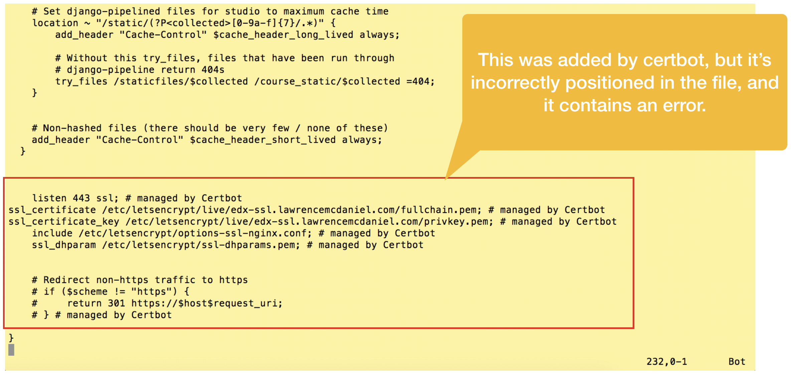
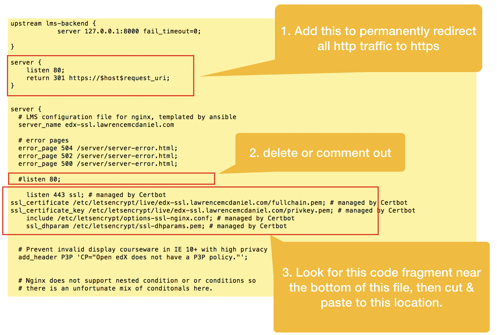
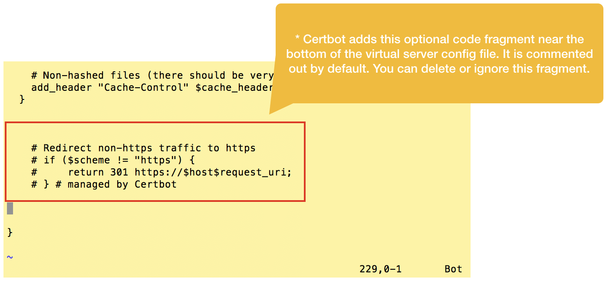

3. Edit Nginx Virtual Server Config Files
The Open edX virtual server configuration files for the LMS and CMS are a little too complex for Certbot to analyze, causing it make a couple of minor mistakes. First, it correctly adds a new listener on port 443 but incorrectly neglects to un-assign the existing listener on port 80. Second, it incorrectly places the SSL certificate files paths and listener directive at the bottom of the virtual server config file. Fortunately, these are easy to remedy.
First, open the lms config file and look for the new configuration code snippets that Certbot added near the bottom of the file.

Cut and re-paste this configuration code snippet towards the top of the same file as per the screen shot below. Summarizing what we’re doing:
Add a new virtual server that listens on port 80, and redirects all traffic to https
In the original virtual server declaration, remove the directive to listen on port 80
Paste the Certbot code snippet immediately below the server_name directive

Certbot additionally pastes a commented-out snippet for handling redirection from http to https, however, we’ll ignore this snippet entirely since we’ve already taken care of this in the previous step.

After you finish all edits you’ll need to restart Nginx:
sudo systemctl restart nginx
To verify that your configuration edits are correct you should check the server status after restarting:
sudo systemctl status nginx